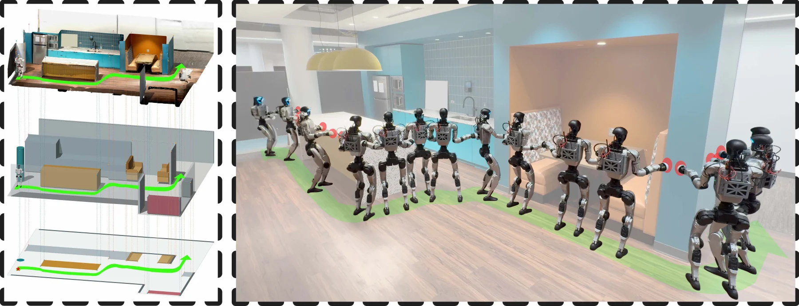
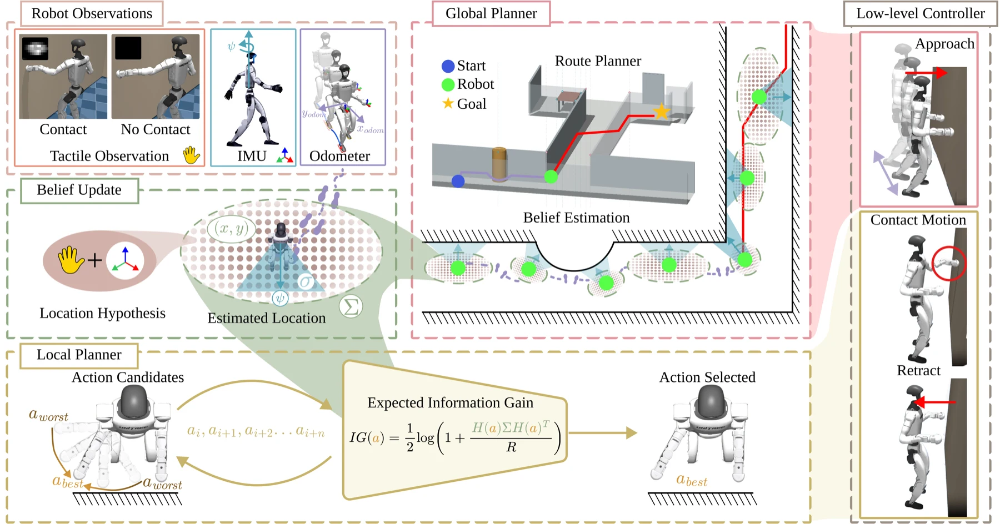
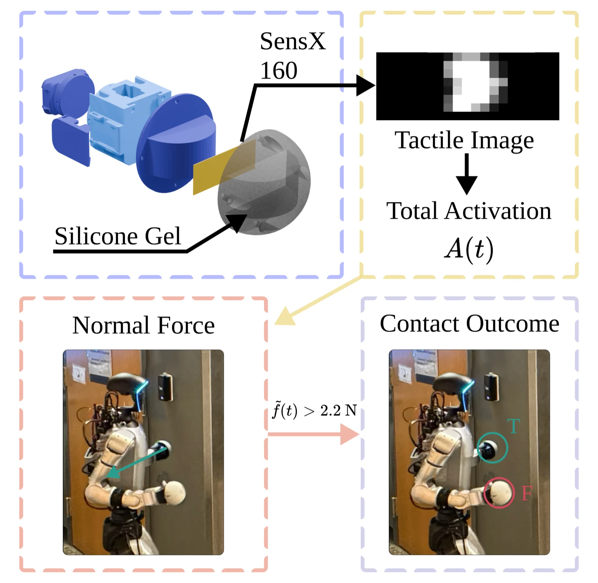
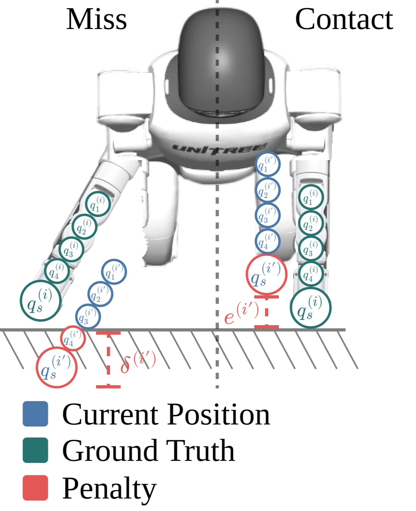
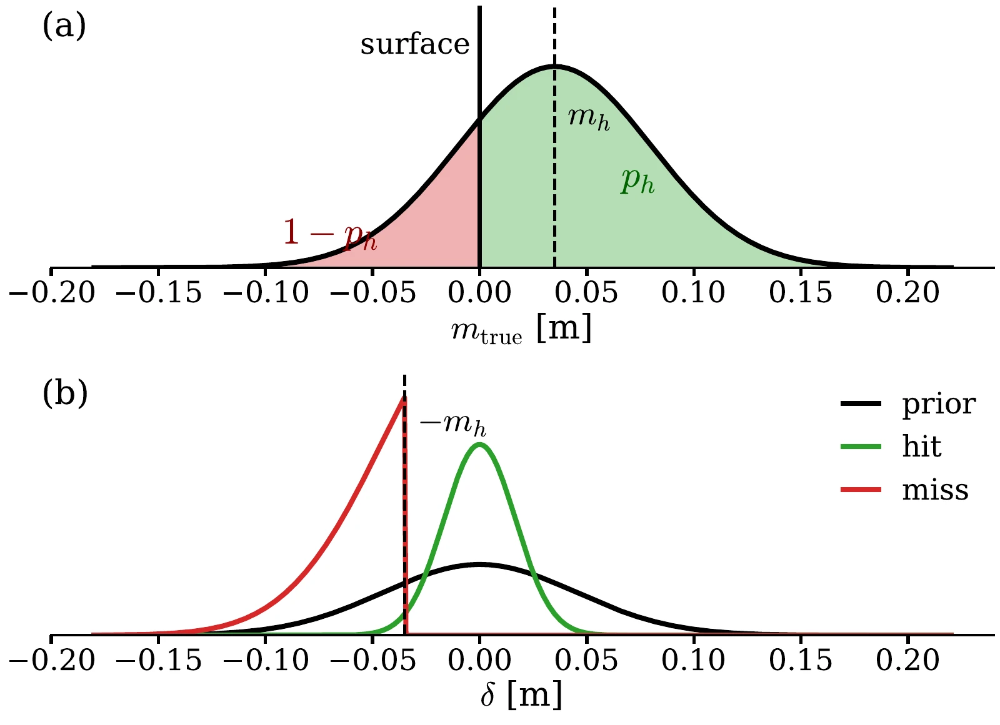
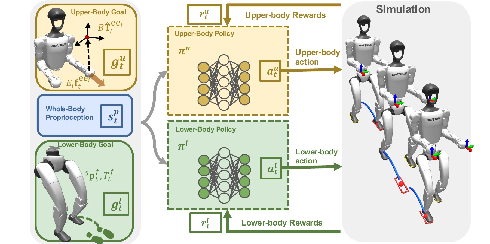

Vision-Free Navigation in Visually Degraded Environments
Video experiments are not yet included in the Overleaf resources.
Anonymous project page
Anonymous Institutions
Under Review · 2027

Navigation in visually compromised environments is challenging when regular visual perception is unavailable. We present TapNav, a humanoid navigation framework that enables a robot to seek an endpoint by touching surrounding indoor structures without a visual sensing modality. The system combines three components: a sensorized contact interface and processing pipeline for reliable environmental touch; a low-level controller that coordinates locomotion, balance, and regulated end-effector contact; and an active belief-space planner that selects informative movement and contact actions to bound localization uncertainty while navigating toward the destination.
End-to-end tactile exploration and exit-seeking with no visual observations.
Video experiments are not yet included in the Overleaf resources.
The same tactile interface supports navigation with and without a prior floorplan.
Contact observations localize the robot and resolve pose ambiguity.
Boundary exploration grows a local map and searches for openings.
Short clips can isolate the behaviors that make the full system work.
Tactile observations and proprioception are processed into reliable contact events, fused into the robot's pose belief, and used by a global and local planner to select goal-directed movement and contact actions. A low-level controller executes approach, contact, and retract motions.

Each end-effector carries a SensX tactile sensor. The processing stack converts a tactile image into a total activation signal, filters it into a normal-force estimate, and declares a contact when the filtered force exceeds the contact threshold.

TapNav maintains a belief over the planar robot pose. At each sensing location, the local planner evaluates reachable probes and selects the action with the greatest expected information gain while accounting for both contact and miss outcomes.


The controller uses separate upper- and lower-body policies with shared whole-body proprioception. The upper-body policy tracks end-effector pose and force, while the lower-body policy tracks precise footstep commands for stop-and-go navigation.

Computes a collision-free route to the goal while keeping predicted pose uncertainty bounded. Route subgoals specify the next planar displacement and sensing location.
Generates end-effector probe candidates at each sensing location and chooses the action that maximizes expected information gain about the robot pose.
@inproceedings{anonymous2027tapnav,
title = {TapNav: Humanoid Navigation through Tactile Active Perception},
author = {Anonymous Authors},
booktitle = {Under Review},
year = {2027}
}